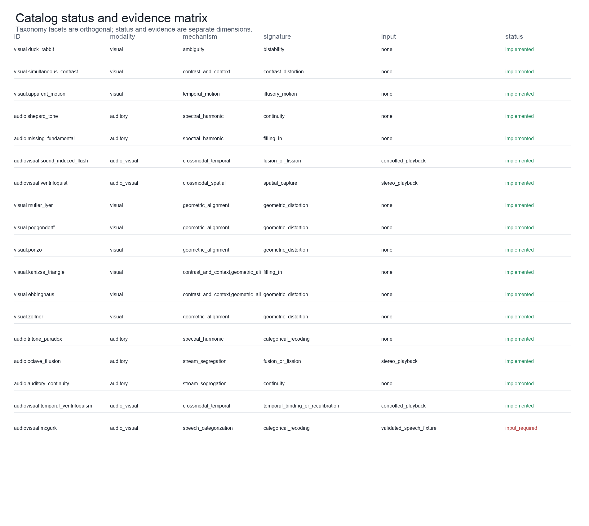
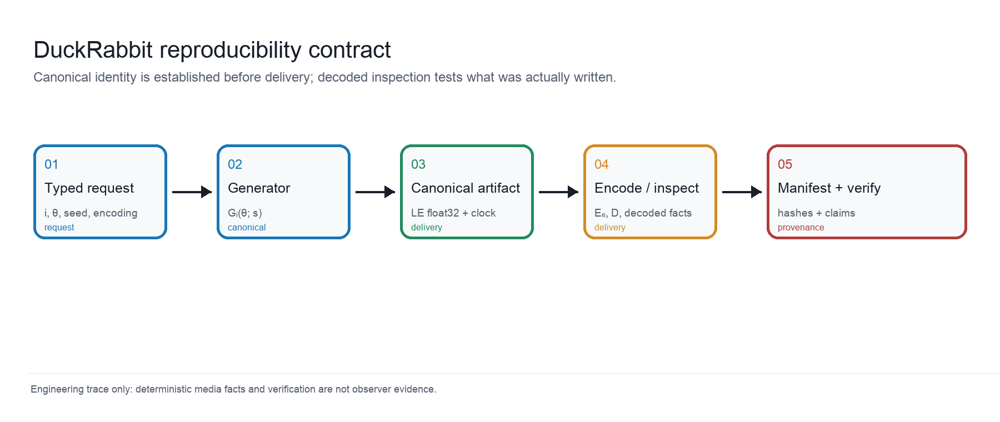
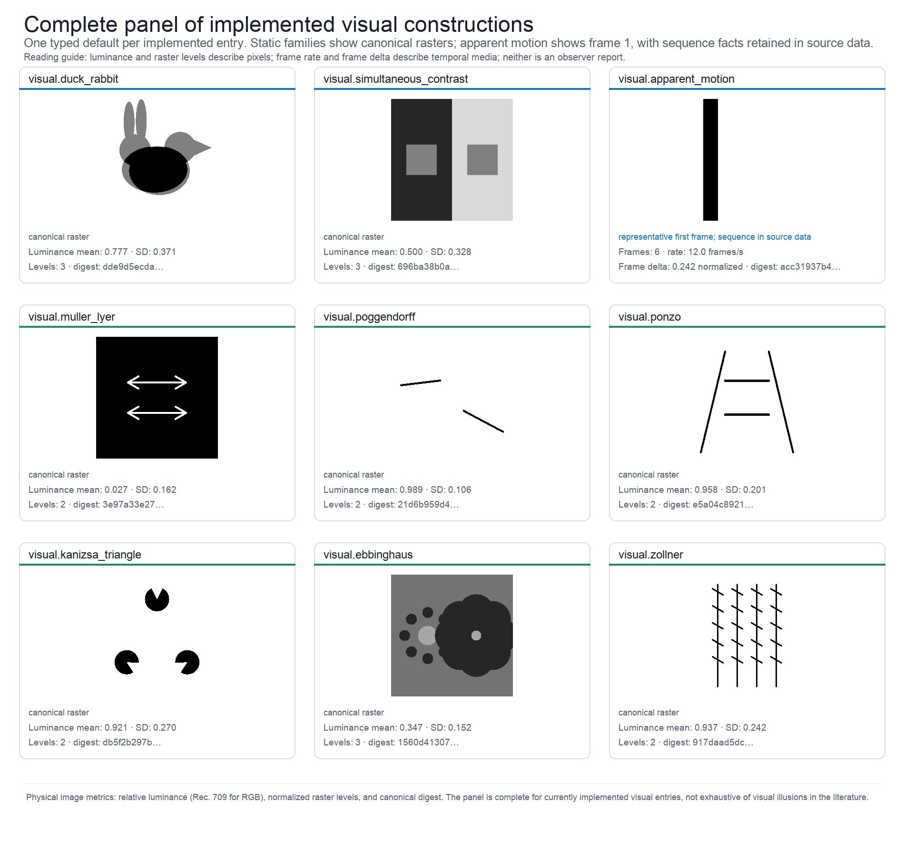
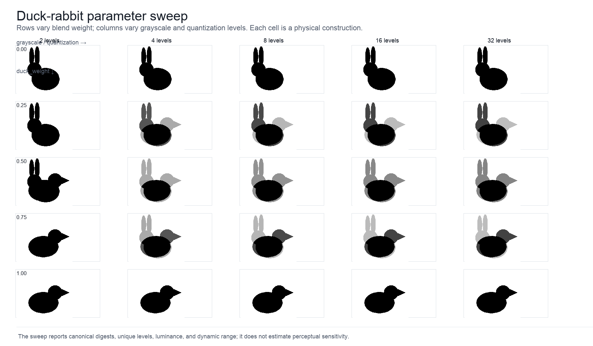
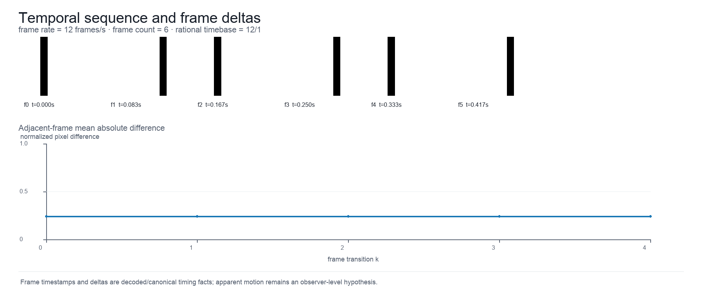
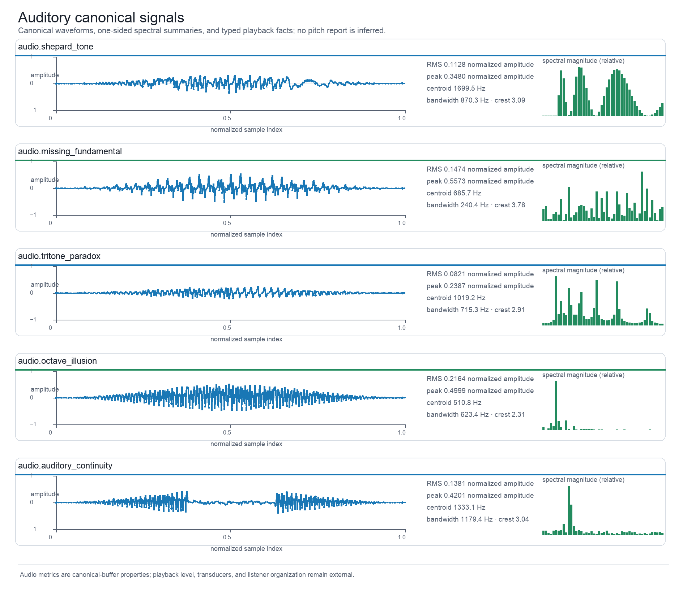
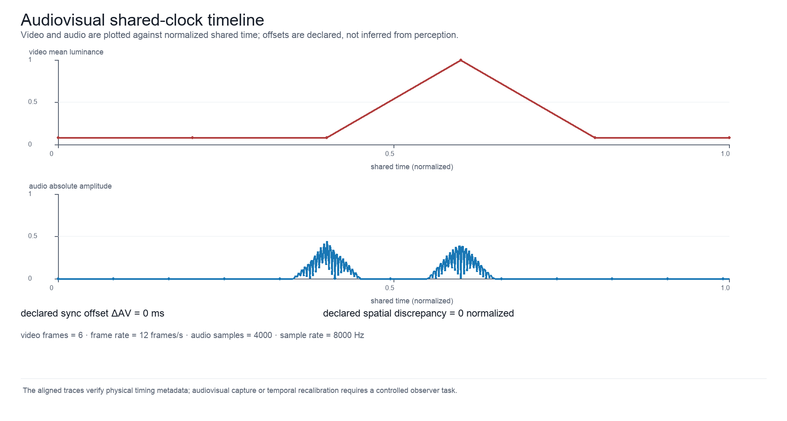
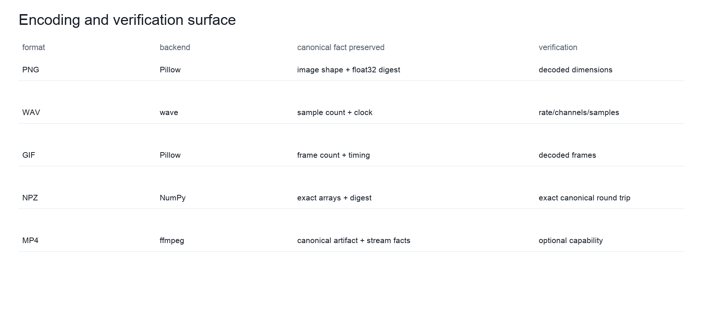
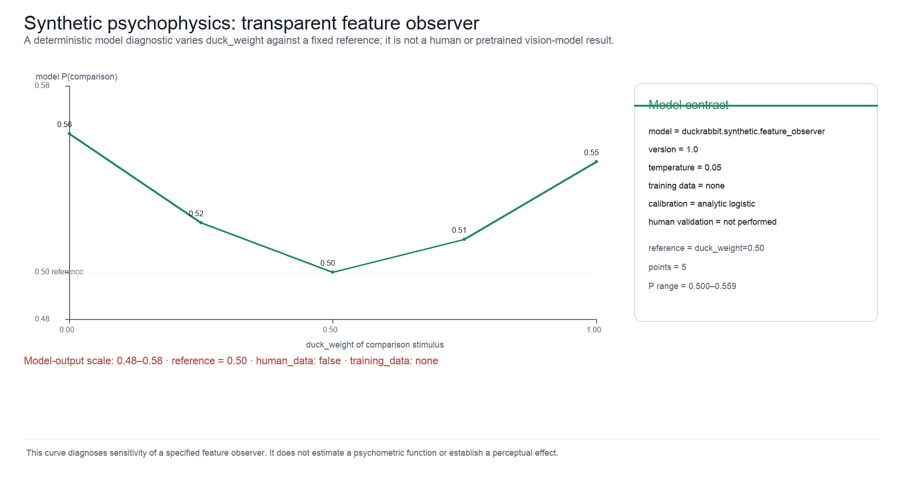

Results
Generated catalog, metrics, and outputs
The live registry reports 17 implemented generators, 18 catalog entries, 18 evidence records, and 36 source records in the checked-in scholarship audit snapshot. The complete catalog is generated in Appendix A rather than copied into prose. The companion figure keeps the categorical registry, source namespace, and implementation statuses visible at a glance.

What this figure shows: A matrix lists all catalog entries with modality, mechanism, signature, input requirement, and implementation status. The live catalog matrix contains 18 entries and keeps modality, mechanism, perceptual signature, input requirement, evidence status, and implementation status as separate facets. Source data output/data/catalog_matrix.json preserve the exact taxonomy snapshot and its source-reference namespace; status is not a proxy for perceptual validation. Controls: live taxonomy registry; evidence matrix snapshot; seed not applicable to the catalog diagram. Objective facts: 18 catalog rows; categorical facets and statuses; no observer-level quantity is applicable. Claim level: source_supported. Source data: output/data/catalog_matrix.json (SHA-256 digest recorded in the figure registry). Evidence lineage: gregory1997visual, hirst2020sound, bruns2019ventriloquist. Limitations: Taxonomy facets are engineering classifications and remain provisional where the literature supports competing accounts. Boundary: Catalog coverage is bounded to this registered package and does not enumerate all known illusions.
The complete catalog matrix [fig:catalog_matrix] is tabulated in the standalone Appendix A [sec:appendix_catalog; tbl:catalog]. The corresponding machine-readable evidence matrix records the source role, exact supported claim, engineering departure, and limitation for every entry. Keeping the table in an appendix gives the main results narrative room to explain the contract without turning a mutable registry snapshot into a prose claim.
Typed domains and delivery profiles
| Type | Unit | Validated domain | Role |
|---|---|---|---|
| PixelDimension | pixels | 8–4096 | image/video width and height |
| GrayscaleLevels | levels | 2–256 | representable grayscale levels |
| QuantizationLevels | levels | 2–256 | output quantization buckets |
| FrequencyHz | Hz | > 0 and finite | oscillator and harmonic frequencies |
| SampleRate | samples/s | 1,000–384,000 | audio sampling clock |
| FrameRate | frames/s | 1–240 | video presentation clock |
| SyncOffsetMs | ms | −10,000–10,000 | audio relative to video |
| SpatialOffset | normalized | −1–1 | declared crossmodal spatial discrepancy |
The parameter contracts are summarized in [tbl:parameters]. They constrain physical construction and serialization; they are not psychophysical scales.
| Format | Backend | Artifact | Profile | Status |
|---|---|---|---|---|
| PNG | Pillow | image | lossless uint8 raster | available |
| WAV | python wave | audio | PCM 8/16/24/32-bit | available |
| GIF | Pillow | video | palette animation with declared duration | available |
| NPZ | NumPy | canonical artifact | exact little-endian float32 archive | available |
| MP4 | ffmpeg | video/audiovisual | H.264 or muxed MP4; decode inspected | available |
The delivery profiles are summarized in [tbl:encodings]. Backend availability is environment-dependent and is recorded at generation time.
The catalog distinguishes a physical construction from an observer claim. For example, the sound-induced-flash generator establishes one flash and one or two beep events on a shared clock; it does not establish a reported flash count. Similarly, the temporal-ventriloquism generator exposes a declared timing offset, while the literature reports observer-dependent temporal judgments under specific tasks and timing conditions [vroomen2004temporal].
Pipeline and provenance

What this figure shows: Five labeled stages connect a typed request to a deterministic canonical artifact, encoded media, decoded inspection, and a verification manifest. This schematic separates a typed request from the canonical artifact it generates, the optional delivery encoder, decoded inspection, and the manifest-level verification decision. Arrows indicate data and provenance dependencies rather than a causal model of perception; the seed is 0 and the complete stage record is in source data output/data/architecture.json. Controls: typed request q=(i,θ,s,e) with seed s=0; default generator and delivery-independent canonicalization. Objective facts: no unit-bearing objective quantity is applicable to this architecture diagram; stage identities and provenance fields are recorded in the sidecar. Claim level: canonical_stimulus. Source data: output/data/architecture.json (SHA-256 digest recorded in the figure registry). Evidence lineage: formalism:eq:typed_request, formalism:eq:canonical_generation, formalism:eq:encoding_verification. Limitations: The schematic abstracts implementation boundaries and does not represent an observer study or a causal theory of perception. Boundary: The pipeline verifies reproducible media facts, not what a person experiences.
The generated architecture figure [fig:architecture] shows the separation between request, canonical artifact, delivery adapter, decoded inspection, and manifest. The canonical digest is the identity of the in-memory stimulus; an encoded hash is the identity of the delivered file. The difference is intentional.
Visual constructions and parameter sweeps

What this figure shows: A 9-panel gallery shows every currently implemented visual catalog entry, with stable IDs and physical raster summaries: Duck-rabbit ambiguous figure, Simultaneous contrast stimulus, Apparent-motion frame sequence, Müller-Lyer geometric illusion, Poggendorff geometric illusion, Ponzo perspective illusion, Kanizsa illusory-contour triangle, Ebbinghaus context-size illusion, Zöllner orientation illusion. This complete gallery presents one deterministic representative from each of the 9 currently implemented visual catalog entries: Duck-rabbit ambiguous figure, Simultaneous contrast stimulus, Apparent-motion frame sequence, Müller-Lyer geometric illusion, Poggendorff geometric illusion, Ponzo perspective illusion, Kanizsa illusory-contour triangle, Ebbinghaus context-size illusion, Zöllner orientation illusion. The panel therefore covers the package’s available visual families—ambiguous figure, contrast, apparent motion, geometric context, illusory contour, contextual size, and orientation-related constructions—using typed defaults at seed 0. For the temporally expressed apparent-motion entry, the displayed tile is its first frame and the source data preserve the full sequence. The source data sidecar output/data/visual_panel.json records the stable ID, generator parameters, canonical SHA-256 digest, Rec. 709 or grayscale luminance statistics, raster-level counts, and parameter boundary for every tile. Controls: one default typed parameter object per implemented visual entry; seed s=0; dimensions, luminance bounds, grayscale, and quantization controls remain in each generator schema; temporal entries display their first frame but retain sequence metrics. Objective facts: per tile: mean and standard-deviation relative luminance, unique raster levels, and canonical SHA-256 digest; temporal entries additionally retain frame count, frame rate, and frame deltas; definitions and units are in the source data JSON. Claim level: canonical_stimulus. Source data: output/data/visual_panel.json (SHA-256 digest recorded in the figure registry). Evidence lineage: gregory1997visual, brugger1999duckrabbit, howe2005muller, morgan1999poggendorff, fisher1967ponzo, yildiz2022ponzo, kanizsa1976contours, mruczek2015ebbinghaus, earle1995zollner, wertheimer1912motion, sekuler1996wertheimer. Limitations: The gallery is complete for implemented visual entries in this package, not a complete survey of visual illusions; literature families, historical displays, and DuckRabbit rasters are not pixel-identical by default. Viewing scale, display calibration, viewing distance, and observer conditions can change the relevance of a construction; the gallery does not measure an observer’s perceptual report. Boundary: The figure establishes coverage of the package’s implemented visual constructions and their deterministic raster facts. It does not establish that any viewer will perceive the named signature, nor that the set is exhaustive of the visual-illusion literature.
The visual panel [fig:visual_panel] is deliberately a coverage figure: it contains one deterministic representative for every currently implemented visual entry, including apparent motion and Zöllner in addition to the static ambiguous-figure, contrast, geometric-context, illusory-contour, and contextual- size families. Equalities, masks, line geometry, luminance bounds, and temporal positions are properties of the typed rasters or sequences. They are not observer scores, and the gallery is not an exhaustive ontology of visual illusions.

What this figure shows: A labeled grid crosses five duck–rabbit blend weights with five grayscale and quantization settings, with physical metrics recorded for each cell. This 5×5 sweep varies duck–rabbit blend weight across rows and jointly varies grayscale and quantization levels across columns. Each cell is regenerated from an immutable typed parameter object at seed 0; source data output/data/visual_sweep.json records canonical digests, unique-level counts, normalized luminance, and effective dynamic range for every condition. Controls: duck_weight ∈ {0,.25,.5,.75,1}; grayscale=quantization ∈ {2,4,8,16,32}; seed s=0. Objective facts: 25 canonical rasters; unique levels, normalized mean luminance, and effective dynamic range per cell. Claim level: physical_metric. Source data: output/data/visual_sweep.json (SHA-256 digest recorded in the figure registry). Evidence lineage: brugger1999duckrabbit, gregory1997visual. Limitations: The grid is a sensitivity of the construction parameters, not a psychophysical sensitivity curve or a validated observer effect. Boundary: The chosen grid is an engineering sampling of the parameter domain and does not imply an optimal or perceptually uniform spacing.
The sweep [fig:visual_sweep] varies duck-weight from 0 to 1 and jointly varies representable grayscale and quantization levels. The source data preserve canonical digests and unique-value counts; no perceptual score is assigned to a sweep cell.
Temporal and auditory constructions

What this figure shows: Six ordered frames are labeled with timestamps and paired with a line plot of adjacent-frame normalized pixel differences. The frame strip exposes the order and timestamps of the apparent-motion construction, while the lower trace reports adjacent-frame mean absolute pixel differences. Source data output/data/temporal_sequence.json preserve frame count, frame rate, reduced rational timebase, timestamps in seconds, and the nonzero transition series; seed 0 identifies the generated sequence. Controls: visual.apparent_motion default typed parameters; frame rate and frame count from the canonical sequence; seed s=0. Objective facts: timestamps in seconds, frame rate in frames/s, frame count, rational timebase, and adjacent-frame normalized pixel difference. Claim level: physical_metric. Source data: output/data/temporal_sequence.json (SHA-256 digest recorded in the figure registry). Evidence lineage: wertheimer1912motion, sekuler1996wertheimer. Limitations: Frame succession and frame deltas are physical file properties; playback timing, display persistence, and motion reports require a controlled observer task. Boundary: The figure documents temporal structure rather than the presence, direction, or strength of perceived motion.
The temporal figure [fig:temporal_sequence] reports frame succession, rational frame rate, and frame-to-frame mean absolute differences. These facts establish temporal structure in the file, not the presence or strength of perceived motion.

What this figure shows: Five labeled rows show canonical audio waveforms, relative one-sided spectral bars, RMS and peak in normalized amplitude, and spectral summaries in hertz. Five implemented auditory constructions—Shepard tone, missing fundamental, tritone paradox, octave illusion, and auditory continuity—are shown as canonical waveforms with compact one-sided FFT summaries. Source data output/data/audio_signals.json records sample rate, channel layout, RMS, peak, spectral centroid, bandwidth, crest factor, canonical digest, and the declared display-bin convention; no pitch or stream report is inferred. Controls: default typed audio parameters; per-generator channel layout and sample rate; seed s=0; one-sided FFT display with 48 sampled bins. Objective facts: RMS and peak in normalized amplitude; spectral centroid and bandwidth in Hz; sample rate in samples/s; channel layout and canonical SHA-256 digest. Claim level: physical_metric. Source data: output/data/audio_signals.json (SHA-256 digest recorded in the figure registry). Evidence lineage: shepard1984scale, zatorre2005missing, deutsch1986tritone, repp1997tritone, deutsch1974octave, warren1970continuity, riecke2011continuity. Limitations: Playback level, transducer response, dichotic separation, masker design, and listener judgments are external to the canonical buffer. Boundary: The figure compares generated signal properties and literature-linked families; it does not establish pitch, continuity, or stream organization for a listener.
The auditory figure [fig:audio_signals] shows canonical waveforms and spectral summaries for Shepard, missing-fundamental, tritone, octave, and continuity constructions. RMS, peak, spectral centroid, bandwidth, and channel layout are calculated from the canonical buffer with explicit units and windowing rules. Pitch direction, pitch height, continuity, and stream organization remain observer-level outcomes that depend on playback and task conditions.
Audiovisual timing and encoding

What this figure shows: Two labeled traces share a normalized time axis: video mean luminance and audio absolute amplitude, with signed synchronization and spatial offsets printed below. Video mean luminance and rectified audio amplitude are placed on a common normalized time axis for the sound-induced-flash construction. Source data output/data/audiovisual_timeline.json records the video frame clock, audio sampling clock, event traces, signed audio-minus-video synchronization offset in milliseconds, and normalized spatial discrepancy; alignment is declared by the generator, not estimated from perception. Controls: audiovisual.sound_induced_flash default shared timeline; declared sync offset ΔAV and spatial offset; seed s=0. Objective facts: video luminance and audio envelope on normalized shared time; ΔAV in ms; spatial discrepancy in normalized units; frame and sample clocks in the sidecar. Claim level: physical_metric. Source data: output/data/audiovisual_timeline.json (SHA-256 digest recorded in the figure registry). Evidence lineage: shams2000sifi, hirst2020sound, vroomen2004temporal, hartcherobrien2011temporal. Limitations: Display refresh, audio hardware, event latency, and observer temporal binding are not measured by this figure. Boundary: A shared-clock construction is not evidence that observers bind the events at the declared or any other perceptual time.
The audiovisual timeline [fig:audiovisual_timeline] displays video luminance and audio amplitude against the shared clock, alongside declared synchronization and spatial offsets. Ventriloquist stimuli require stereo playback and spatially resolved display; temporal binding requires controlled timing and an observer task [bruns2019ventriloquist; vroomen2004temporal].

What this figure shows: A five-row comparison lists format, backend, preserved canonical facts, and the corresponding decoded verification checks. The comparison separates the canonical artifact from delivery containers: PNG, WAV, GIF, NPZ, and optional MP4/muxed MP4. Source data output/data/encoding_verification.json records backend identity, preserved canonical facts, decoded inspection targets, and capability status as observed in the generation environment; the table therefore describes an adapter contract rather than a claim about codec quality. Controls: typed encoding profile selected per artifact; overwrite and backend capability checks; seed inherited from the stimulus request. Objective facts: format availability and verification scope are environment observations; NPZ is exact while other formats are decoded and tolerance-checked. Claim level: encoded_media. Source data: output/data/encoding_verification.json (SHA-256 digest recorded in the figure registry). Evidence lineage: engineering:typed_media_adapters. Limitations: Backend availability, codec versions, container metadata, and lossy tolerances are environment-dependent; playback software can expose additional behavior. Boundary: A successful encode or decode does not validate an observer effect or guarantee cross-device perceptual equivalence.
The encoding matrix [fig:encoding_verification] makes backend capability and verification scope visible. NPZ is the exact canonical archive; PNG, WAV, GIF, and MP4 are delivery containers whose decoded facts are checked against the manifest.
Objective metric results
| Metric | Unit | Definition | Tolerance | Claim level |
|---|---|---|---|---|
| mean_luminance | normalized_luminance | mean Rec. 709 relative luminance (grayscale is identity) | exact canonical | physical_metric |
| unique_values | levels | count of distinct canonical image values | exact integer | physical_metric |
| rms | normalized_amplitude | root-mean-square audio amplitude | finite scalar | physical_metric |
| peak | normalized_amplitude | maximum absolute audio amplitude | finite scalar | physical_metric |
| spectral_centroid_hz | Hz | energy-weighted one-sided spectral centroid | finite scalar | physical_metric |
| spectral_bandwidth_hz | Hz | spectral standard deviation around the one-sided centroid | finite scalar | physical_metric |
| crest_factor | ratio | audio peak divided by RMS with zero-RMS guard | finite scalar | physical_metric |
| mean_temporal_delta | normalized_pixel_difference | mean adjacent-frame absolute difference | finite scalar | physical_metric |
| sync_offset | ms | declared audio-minus-video offset | typed value | physical_metric |
The metric definitions in [tbl:metrics] are computed from canonical or decoded artifacts and do not encode observer interpretations.
The default duck-rabbit artifact contains 3 unique raster levels and has mean normalized luminance 0.7770. These values are live generated facts, not perceptual effect sizes.
Observer estimands and verification controls
| Estimand | Response and model | Reference and contrast | Uncertainty |
|---|---|---|---|
| sifi flash count contrast | event count; poisson or ordinal | sifi one beep; two-beep minus one-beep event-count response | 95% confidence interval |
| temporal binding offset contrast | continuous magnitude; linear mixed | temporal sync; reported timing shift per declared sync offset | 95% confidence interval |
The analysis contract in [tbl:observer_estimands] specifies estimands and uncertainty procedures without asserting any result.
| Failure mode | Control | Expected result |
|---|---|---|
| altered encoded file | recompute encoded SHA-256 | fail |
| stale canonical digest | recompute canonical little-endian float32 digest | fail |
| incorrect decoded dimensions | compare inspection facts with manifest summary | fail |
| stream timing mismatch | compare duration/timebase and declared sync offset | fail |
| unsupported backend | capability probe before encoding | explicit capability error |
| conflicting format requests | reject format_name/output_spec disagreement | parameter error |
The negative controls in [tbl:verification] test package integrity and media contracts; they are not null findings about perception.
Synthetic psychophysics model diagnostic

What this figure shows: A narrow-range line plot shows deterministic
model probability across duck_weight values beside the model identity,
temperature, no-training-data statement, and human-data boundary. The
hand-specified feature observer compares duck_weight variants with a
fixed canonical reference. Its probability trace is computed
analytically from serialized features, weights, and temperature; source
data output/data/synthetic_psychophysics.json records model ID/version,
reference and comparison digests, seed, calibration,
training_data=none, and human_data=false. The
y-axis is deliberately a narrow model-output range rather than a human
psychometric scale. Controls: duck_weight comparison against fixed
reference; serialized feature weights and temperature; seed s=0.
Objective facts: model probability and score delta on the displayed
model-output scale; canonical stimulus digests; human_data=false;
training_data=none. Claim level: synthetic_model_output. Source data:
output/data/synthetic_psychophysics.json (SHA-256 digest recorded in the
figure registry). Evidence lineage: observer:preregistered_estimands.
Limitations: The model is hand-specified, has no training data, has not
been calibrated against observers, and does not estimate a human
threshold or effect size. Its probabilities are model outputs, not
participant responses or a psychometric function. Boundary: This
diagnostic tests deterministic orchestration and metamorphic
input-output behavior only; empirical psychophysics remains future
work.
The diagnostic [fig:synthetic_psychophysics] evaluates a fully
serialized, hand-specified feature observer against a fixed canonical
reference while varying duck_weight. Its logistic
probabilities are model outputs generated from explicit features,
weights, temperature, and seed; they are not a pretrained vision-model
score, a human psychometric function, an assumed human effect size, or
participant data. A future human study would require a preregistered
task, calibrated display and playback, consented participants, exclusion
and missingness rules, and an analysis contract before any observer
claim could be made.